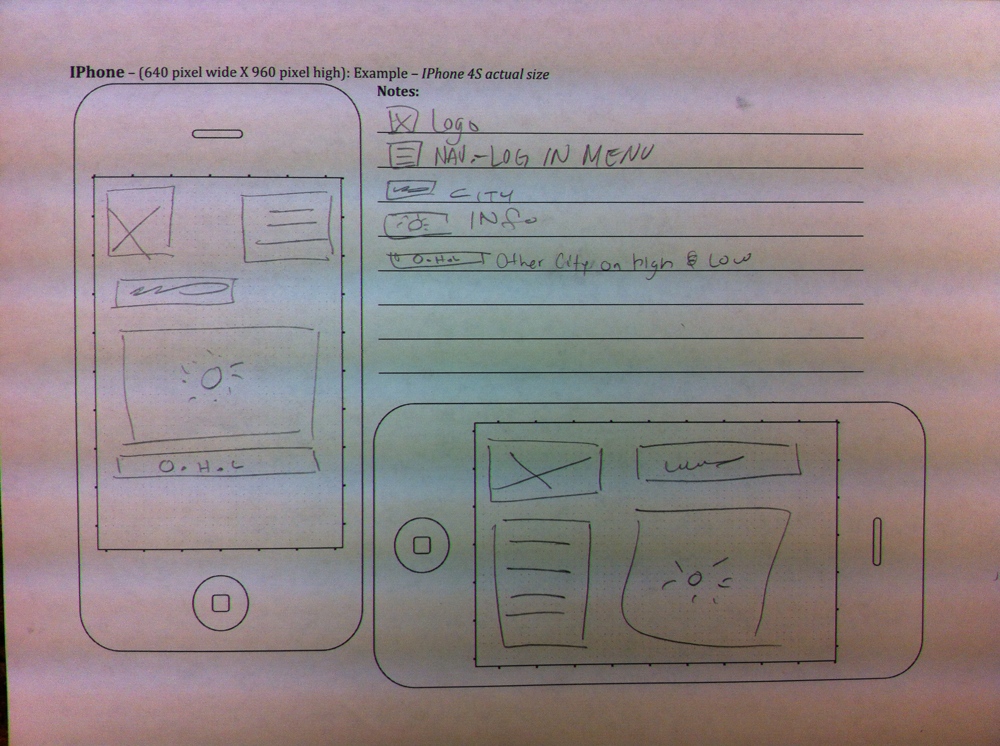
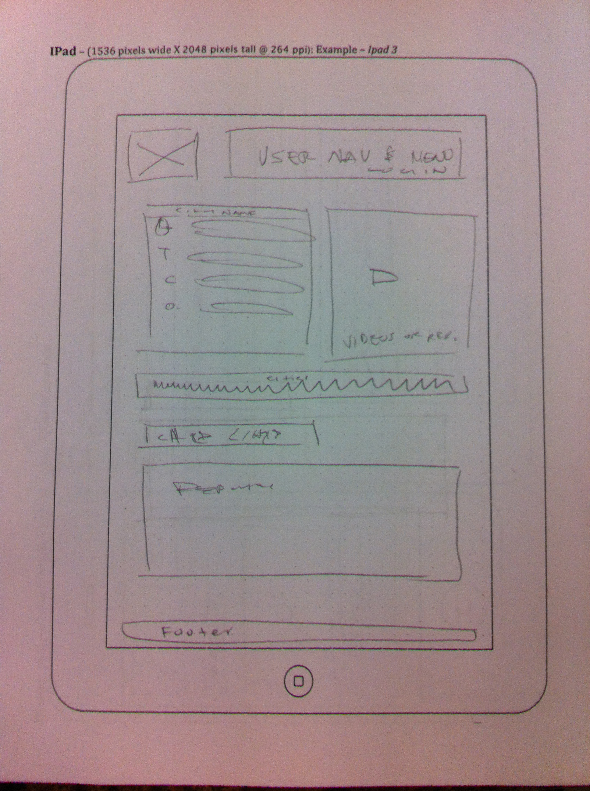
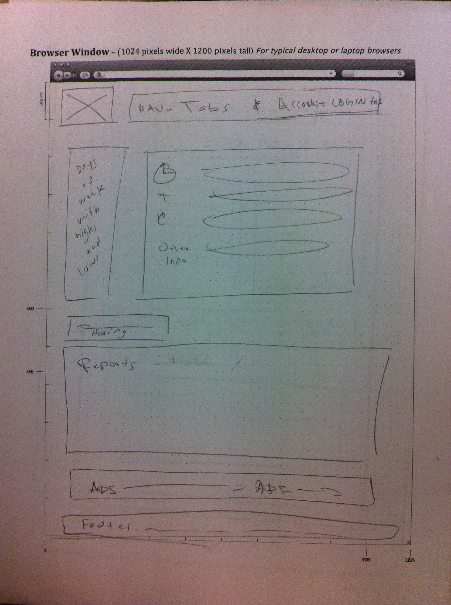

Purpose Statement
Be prepared for the unexpected change of temperature your day may have! Being prepared can save you from many problems. This website will make a forecast for the following cities: Franklin, Springfield, and Greenville.
Audience
My target is people of any age, any type of income or education level, un-employed or employed. They will be searching to know the weather for these specific cities, and in search of what to wear and expect for the day.
Persona
Ericka, a thirty-year old mother who works as a CPA, her husband is a teacher in a college. She has two sons who are ten and eight. They live in a city where the weather changes from hot to cold in a glimpse of an eye.
Sketches
Small
Original
Medium
Original
Large
Original
Sketches peered reviewed by: Joseph Walker